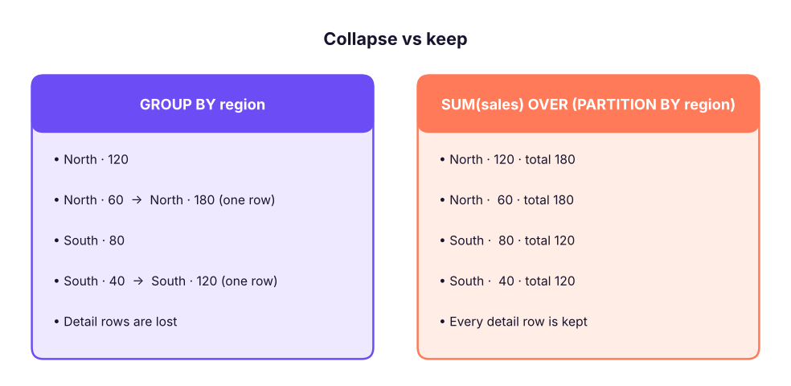

OFFSET-FETCH and Window Functions I: OVER, PARTITION BY & Ranking
Page through results with OFFSET and FETCH, then learn window functions, the most powerful analytics feature in SQL. Understand OVER and PARTITION BY, rank rows with ROW_NUMBER, RANK, DENSE_RANK and NTILE, solve top-N-per-group and de-duplication problems, and compare aggregate windows with GROUP BY.
● SQL class 5✦ SQL Server 2022, 2026Intermediate–Advanced⏱ 130 min
OFFSET n ROWS FETCH NEXT m ROWS ONLY skips n rows and returns the next m. It requires ORDER BY. It is the standard (ANSI) way to page results, used for "page 3 of results" in applications and for "rows 11 to 20" questions.
SQL
SELECT customer_name, city, segment
FROM customers
ORDERBY customer_id
OFFSET10ROWSFETCHNEXT5ROWSONLY;
Result
customer_name
city
segment
Sai Iyer
Indore
Consumer
Neha Kulkarni
Bengaluru
Consumer
Diya Khan
Bhubaneswar
Home Office
Kabir Das
Kolkata
Consumer
Reyansh Joshi
Mumbai
Corporate
5 rows × 3 columns
Page
OFFSET
FETCH
1
0
page size
2
page size
page size
page p
(p − 1) × page size
page size
TOP n cannot skip rows; OFFSET-FETCH can. PostgreSQL/MySQL write LIMIT m OFFSET n. On very deep pages (OFFSET 1,000,000) databases still read and discard all skipped rows, so large systems use keyset pagination (WHERE id > last_seen_id ORDER BY id).
The "Nth highest value" question can be answered with it too: the second-highest line value is ORDER BY sales DESC OFFSET 1 ROWS FETCH NEXT 1 ROWS ONLY on distinct values:
SQL
SELECTDISTINCT sales AS second_highest_sales
FROM superstore
ORDERBY sales DESCOFFSET1ROWSFETCHNEXT1ROWSONLY;
Result
second_highest_sales
551,530
1 rows × 1 columns
What is a window function?
A window function computes a value for each row using a set of related rows (its window), without collapsing the rows like GROUP BY does.

GROUP BY collapses rows into one per group. A window function keeps every row and adds the group's result beside it.
The OVER clause
SQL
function_name(expression) OVER (
PARTITIONBY column_list -- split rows into groups (optional)ORDERBY column_list -- order inside each group (needed for ranking, running totals)ROWSBETWEEN … AND … -- optional frame (Lesson 12)
)
PARTITION BY is like GROUP BY for the window: the function restarts for every partition. Without it, the whole result is one partition.
ORDER BY inside OVER orders rows within the partition (it does not sort the final output; use the normal ORDER BY for that).
SQL
SELECT region, city, order_id, sales,
SUM(sales) OVER (PARTITIONBY region) AS region_total,
ROUND(100.0 * sales / SUM(sales) OVER (PARTITIONBY region), 4) AS pct_of_region,
AVG(sales) OVER () AS overall_avg
FROM superstore
ORDERBY region, sales DESC;
Result
region
city
order_id
sales
region_total
pct_of_region
overall_avg
East
Kolkata
IN-2025-03160
472,740
46,484,119
1.02
31,854
East
Kolkata
IN-2025-02134
442,350
46,484,119
0.95
31,854
East
Kolkata
IN-2025-02822
422,640
46,484,119
0.91
31,854
East
Guwahati
IN-2025-02562
413,040
46,484,119
0.89
31,854
East
Patna
IN-2023-00171
393,950
46,484,119
0.85
31,854
East
Patna
IN-2025-02317
388,320
46,484,119
0.84
31,854
East
Bhubaneswar
IN-2025-02981
372,720
46,484,119
0.80
31,854
East
Patna
IN-2024-01792
372,720
46,484,119
0.80
31,854
6,323 rows × 7 columns (first 8 shown)
Each row keeps its own detail but now also shows its region total, its share of the region, and the overall average. With GROUP BY you would need a join to get this.
Ranking functions
All four need ORDER BY inside OVER.
Function
Behaviour with ties
Example values 90, 80, 80, 70
ROW_NUMBER()
Unique numbers; ties broken arbitrarily
1, 2, 3, 4
RANK()
Ties share a rank; gaps follow
1, 2, 2, 4
DENSE_RANK()
Ties share a rank; no gaps
1, 2, 2, 3
NTILE(n)
Splits rows into n equal buckets
4 rows, NTILE(2): 1, 1, 2, 2
SQL
WITH scores AS (
SELECT'Asha'AS name, 90AS score UNIONALLSELECT'Ravi', 80UNIONALLSELECT'Meera', 80UNIONALLSELECT'Kabir', 70
)
SELECT name, score,
ROW_NUMBER() OVER (ORDERBY score DESC) AS row_number,
RANK() OVER (ORDERBY score DESC) AS rank,
DENSE_RANK() OVER (ORDERBY score DESC) AS dense_rank,
NTILE(2) OVER (ORDERBY score DESC) AS half
FROM scores;
Result
name
score
row_number
rank
dense_rank
half
Asha
90
1
1
1
1
Ravi
80
2
2
2
1
Meera
80
3
2
2
2
Kabir
70
4
4
3
2
4 rows × 6 columns
Ravi and Meera tie at 80: RANK gives both 2 and skips 3; DENSE_RANK gives both 2 and continues with 3; ROW_NUMBER gives 2 and 3 in arbitrary order (add a tie-breaker column to make it deterministic).
Ranking within groups
"Rank each sub-category by sales within its category":
SQL
SELECT category, sub_category,
ROUND(SUM(sales), 0) AS sales,
RANK() OVER (PARTITIONBY category ORDERBYSUM(sales) DESC) AS rank_in_category
FROM superstore
GROUPBY category, sub_category
ORDERBY category, rank_in_category;
Result
category
sub_category
sales
rank_in_category
Furniture
Tables
14,046,224
1
Furniture
Bookcases
11,274,849
2
Furniture
Chairs
8,091,474
3
Furniture
Furnishings
1,429,307
4
Office Supplies
Appliances
6,333,529
1
Office Supplies
Storage
2,659,340
2
Office Supplies
Paper
493,232
3
Office Supplies
Binders
401,219
4
Office Supplies
Art
245,985
5
Technology
Copiers
78,749,926
1
Technology
Machines
42,590,335
2
Technology
Phones
31,919,223
3
13 rows × 4 columns (first 12 shown)
Note the order: GROUP BY runs first, then the window function ranks the grouped rows. That is why SUM(sales) can appear inside OVER.
Top-N per group
You cannot filter on a window function in WHERE (windows are computed in the SELECT step, after WHERE). Wrap the query in a CTE or derived table, then filter the rank.
"Top 2 cities by sales in each region":
SQL
WITH city_sales AS (
SELECT region, city, SUM(sales) AS sales
FROM superstore
GROUPBY region, city
), ranked AS (
SELECT region, city, sales,
DENSE_RANK() OVER (PARTITIONBY region ORDERBY sales DESC) AS rnk
FROM city_sales
)
SELECT region, city, ROUND(sales, 0) AS sales, rnk
FROM ranked
WHERE rnk <= 2ORDERBY region, rnk;
Result
region
city
sales
rnk
East
Kolkata
13,888,466
1
East
Patna
12,444,393
2
North
Delhi
15,657,610
1
North
Chandigarh
11,541,792
2
South
Kochi
14,713,126
1
South
Bengaluru
13,625,216
2
West
Pune
17,357,038
1
West
Indore
14,408,485
2
8 rows × 4 columns
"Each customer's most recent order" (use ROW_NUMBER to get exactly one row per customer even with ties):
SQL
WITH ranked AS (
SELECT customer_id, order_id, order_date,
ROW_NUMBER() OVER (PARTITIONBY customer_id ORDERBY order_date DESC, order_id DESC) AS rn
FROM orders
)
SELECT customer_id, order_id, order_date
FROM ranked
WHERE rn = 1ORDERBY customer_id;
Result
customer_id
order_id
order_date
C0001
IN-2025-02263
2025-04-09
C0002
IN-2025-02871
2025-10-21
C0003
IN-2025-02642
2025-08-18
C0004
IN-2025-02344
2025-05-10
C0005
IN-2025-02982
2025-11-12
C0006
IN-2025-02960
2025-11-08
785 rows × 3 columns (first 6 shown)
Nth highest per group
"Second-highest paid employee in each department" (a top interview question):
SQL
WITH r AS (
SELECT department, emp_id, monthly_income,
DENSE_RANK() OVER (PARTITIONBY department ORDERBY monthly_income DESC) AS rnk
FROM employees
)
SELECT department, emp_id, monthly_income
FROM r
WHERE rnk = 2ORDERBY department;
Result
department
emp_id
monthly_income
Finance
E00145
185500
HR
E00450
175750
IT
E01473
194500
Operations
E00378
184167
R&D
E00580
188083
Sales
E01218
184833
6 rows × 3 columns
Use DENSE_RANK for "Nth highest value" (ties share a position, no gaps) and ROW_NUMBER for "Nth row".
Removing duplicates with ROW_NUMBER
SQL
WITH d AS (
SELECT *, ROW_NUMBER() OVER (PARTITIONBY customer_id, order_date, product_id ORDERBY item_id) AS rn
FROM order_items_raw
)
DELETEFROM d WHERE rn > 1; -- SQL Server lets you DELETE through a CTE
Rows with the same business key get numbers 1, 2, 3…; keeping rn = 1 keeps one copy. Always check with a SELECT … WHERE rn > 1 first.
Let's count how many lines in our data repeat the same product in the same order (what a de-duplication would touch):
SQL
WITH d AS (
SELECT order_id, product_id,
ROW_NUMBER() OVER (PARTITIONBY order_id, product_id ORDERBY row_id) AS rn
FROM superstore
)
SELECTCOUNT(*) AS repeated_lines FROM d WHERE rn > 1;
Result
repeated_lines
70
1 rows × 1 columns
(These are legitimate repeat lines, not errors; the point is the pattern.)
NTILE: buckets and percentiles
SQL
WITH cust AS (
SELECT customer_id, SUM(sales) AS sales FROM superstore GROUPBY customer_id
), q AS (
SELECT customer_id, sales, NTILE(4) OVER (ORDERBY sales DESC) AS quartile FROM cust
)
SELECT quartile,
COUNT(*) AS customers,
ROUND(SUM(sales), 0) AS sales,
ROUND(100.0 * SUM(sales) / SUM(SUM(sales)) OVER (), 1) AS pct_of_total_sales
FROM q
GROUPBY quartile
ORDERBY quartile;
Result
quartile
customers
sales
pct_of_total_sales
1
197
111,100,409
55.2
2
196
54,386,341
27.0
3
196
28,080,117
13.9
4
196
7,846,704
3.9
4 rows × 4 columns
Quartile 1 (the top 25% of customers) generates a disproportionate share of sales: the Pareto principle from the Excel charts lesson, now computed in SQL. NTILE is also how RFM scoring is done (ML track).
Aggregate window functions
Any aggregate (SUM, AVG, COUNT, MIN, MAX) becomes a window function with OVER. Without ORDER BY in the window, it uses the whole partition: perfect for totals, shares and comparisons with the group average.
SQL
SELECT department, emp_id, monthly_income,
ROUND(AVG(monthly_income) OVER (PARTITIONBY department), 0) AS dept_avg,
monthly_income - ROUND(AVG(monthly_income) OVER (PARTITIONBY department), 0) AS vs_dept_avg,
COUNT(*) OVER (PARTITIONBY department) AS dept_headcount,
MAX(monthly_income) OVER (PARTITIONBY department) AS dept_max
FROM employees
ORDERBY department, monthly_income DESC;
Result
department
emp_id
monthly_income
dept_avg
vs_dept_avg
dept_headcount
dept_max
Finance
E00519
209833
83,681
126,152
154
209833
Finance
E00145
185500
83,681
101,819
154
209833
Finance
E00336
174417
83,681
90,736
154
209833
Finance
E00201
169500
83,681
85,819
154
209833
Finance
E01172
168167
83,681
84,486
154
209833
Finance
E01151
155167
83,681
71,486
154
209833
Finance
E00759
152083
83,681
68,402
154
209833
Finance
E01004
144667
83,681
60,986
154
209833
1,500 rows × 7 columns (first 8 shown)
This replaces the correlated subquery from Lesson 10 ("earns more than the department average") with one pass over the data.
GROUP BY vs window functions
GROUP BY
Window function
Rows returned
One per group
Same as input
Detail columns
Only grouped columns
All columns
Use for
Summary reports
Rankings, running totals, shares, comparisons with group values
Filter the result
HAVING
Wrap in CTE/subquery and WHERE
Can combine
Yes: group first, then window over the groups
Summary
Key takeaways
OFFSET n ROWS FETCH NEXT m ROWS ONLY (with ORDER BY) paginates; it can skip rows, unlike TOP.
A window function adds a calculation over a set of related rows to each row, without collapsing them. OVER (PARTITION BY … ORDER BY …) defines the window.
To filter on a window result, compute it in a CTE or derived table, then use WHERE.
Top-N per group and Nth highest per group: DENSE_RANK/ROW_NUMBER partitioned by group; de-duplicate with ROW_NUMBER … WHERE rn > 1.
Aggregate windows (SUM() OVER (PARTITION BY …)) show totals, shares and group averages beside each row.
Quick quiz6 questions · tap an answer to check it
1. Scores 100, 90, 90, 80. What does DENSE_RANK() OVER (ORDER BY score DESC) return?
Answer: C. DENSE_RANK gives tied rows the same rank and continues without gaps.
2. Why can't you write WHERE ROW_NUMBER() OVER (...) = 1?
Answer: B. Logical processing order: WHERE runs before SELECT, where windows are computed.
3. What is the difference between PARTITION BY and GROUP BY?
Answer: B. Partitions restart the calculation for each group without reducing the number of rows.
4. Which returns the 3rd highest distinct salary overall?
Answer: A. DENSE_RANK counts distinct values; ROW_NUMBER would count rows even if values repeat.
5.SUM(sales) OVER (PARTITION BY region) returns:
Answer: B. Without ORDER BY in the window, it sums the whole partition.
6. To fetch rows 21–30 of a sorted result you write:
Answer: B. Skip 20, take 10.
ExerciseWindow practice
(1) For each customer segment, rank customers by total sales and show the top 3. (2) For each order line, show its sales as a percentage of its order's total. (3) For each department, list employees whose income is within the top 5% of their department (use NTILE(20)). (4) Show products whose total sales rank in the top 10% of their category.
Show solution
SQL
-- (1)WITH t AS (SELECT c.segment, c.customer_name, SUM(oi.sales) AS sales
FROM order_items oi JOIN orders o ON o.order_id = oi.order_id JOIN customers c ON c.customer_id = o.customer_id
GROUPBY c.segment, c.customer_id, c.customer_name),
r AS (SELECT *, DENSE_RANK() OVER (PARTITIONBY segment ORDERBY sales DESC) AS rnk FROM t)
SELECT * FROM r WHERE rnk <= 3ORDERBY segment, rnk;
-- (2)SELECT item_id, order_id, sales, ROUND(100.0 * sales / SUM(sales) OVER (PARTITIONBY order_id), 1) AS pct_of_order FROM order_items;
-- (3)WITH x AS (SELECT department, emp_id, monthly_income, NTILE(20) OVER (PARTITIONBY department ORDERBY monthly_income DESC) AS bucket FROM employees)
SELECT * FROM x WHERE bucket = 1;
-- (4)WITH p AS (SELECT pr.category, pr.product_id, SUM(oi.sales) AS sales FROM order_items oi JOIN products pr ON pr.product_id = oi.product_id GROUPBY pr.category, pr.product_id),
n AS (SELECT *, NTILE(10) OVER (PARTITIONBY category ORDERBY sales DESC) AS decile FROM p)
SELECT * FROM n WHERE decile = 1;
Interview cornerQuestions you may be asked
Q: RANK vs DENSE_RANK vs ROW_NUMBER?
ROW_NUMBER numbers rows uniquely; RANK gives ties the same rank and skips following ranks; DENSE_RANK gives ties the same rank without gaps.
Q: Find the second-highest salary in each department.
CTE with DENSE_RANK() OVER (PARTITION BY dept ORDER BY salary DESC), filter = 2.
Q: How do you remove duplicate rows keeping one?ROW_NUMBER() OVER (PARTITION BY business_key ORDER BY …) and delete rows where it is greater than 1.
Q: Window function vs GROUP BY?
Windows keep detail rows and add group-level values; GROUP BY returns one row per group.
Practise more online
Free, trusted places to test yourself on this topic. Links open the original site in a new tab.